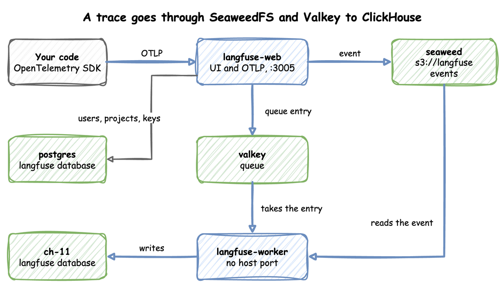
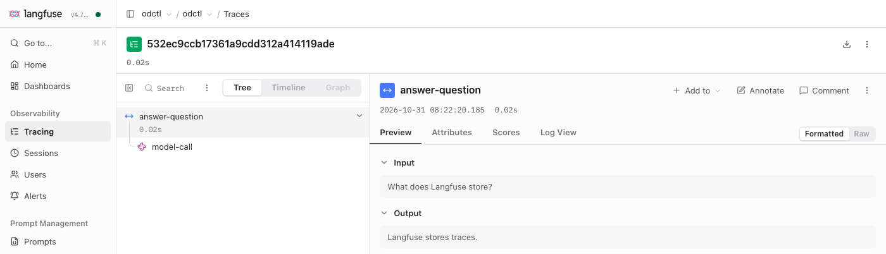

Tracing LLM Apps with Langfuse
The langfuse profile runs Langfuse, which traces and evaluates applications built on LLMs (large language models) and agents. An application sends Langfuse one trace for each request: the record of what it did to answer, such as a call to a model. OpenTelemetry is an open standard for traces, metrics and logs; it calls each step of a trace a span. Langfuse stores each span it receives as an observation.
The profile runs Langfuse 4. It has langfuse-web, which serves the UI and receives traces, and langfuse-worker, which processes them. Both use odctl's PostgreSQL, SeaweedFS, Valkey and ch-lite (ClickHouse), which odctl up starts first. An application sends traces over OTLP, the protocol that the Telemetry guide describes.
This guide builds on Getting Started. The Send to Telemetry Too section also builds on the Telemetry guide. Run the commands in the folder that holds your .odctl workspace. Start the profile:
| docs/snippets/langfuse/commands.sh:up | |
|---|---|
| Endpoint | Address |
|---|---|
UI from the host (user user@odctl.io, password password) |
http://127.0.0.1:3005 |
| OTLP endpoint from the host | http://127.0.0.1:3005/api/public/otel |
OTLP endpoint inside the odctl network |
http://langfuse-web:3000/api/public/otel |
| Project keys | public pk-lf-odctl, secret sk-lf-odctl |
Three facts about the profile:
- It starts
ch-lite, whose two ClickHouse servers have a limit of 4 GB each, set bymem_limitin.odctl/compose-analytics.yml. - Langfuse needs its databases in UTC, so keep
TZin.odctl/.envat its default,UTC. ch-liteandch-fulluse the same container names, so stopch-fullwithodctl down ch-fullbeforeodctl up langfuse.
PostgreSQL reads TZ only when it creates its data folder, as How It Works explains.
A trace takes this path. langfuse-web writes each event it receives to SeaweedFS and puts a reference on a Valkey queue. langfuse-worker takes the reference, reads the event and writes it to ClickHouse:

langfuse-web keeps users, projects and keys in the langfuse database on PostgreSQL. ClickHouse holds the traces in its own langfuse database. The worker has no host port, because only langfuse-web receives requests.
Log In
Open http://127.0.0.1:3005 and sign in as user@odctl.io with the password password. langfuse-web creates this user, the project odctl and its two keys when it first starts. Once you have sent the trace in the next section, the Tracing page lists it, and the trace opens like this:

The tree on the left lists the two observations of the trace. The panel on the right shows the input and output of the one you select.
Send a Trace
This script sends one trace with the OpenTelemetry SDK for Python, the library that creates spans and exports them over OTLP. A question and its answer make one trace of two observations: the root answer-question, and its child model-call. odctl runs no model, so a fixed answer stands in for the model call. Save the script as send.py:
Run it. The commands use uv run --with, which needs uv; with pip, install the two packages with pip install and run the script with python. uv run installs the two OpenTelemetry packages for this run only:
| docs/snippets/langfuse/commands.sh:run | |
|---|---|
It prints the trace ID, a different one on every run:
The exporter sends each span to the OTLP endpoint with Basic auth: an Authorization header that holds Basic and the base64 text of the public key, a colon and the secret key. The header x-langfuse-ingestion-version with the value 4 makes Langfuse 4 show the data at once. Without it, Langfuse 4 can show the data up to 10 minutes late. The attributes langfuse.observation.input and langfuse.observation.output become the input and output of an observation. A span with the attribute gen_ai.request.model becomes a generation, which is the kind of observation Langfuse uses for a call to a model.
Read It Back
Langfuse 4 answers GET /api/public/traces with 404, so this reads the trace with the observations API, version 2. Set TRACE_ID to the ID the script printed, such as TRACE_ID=532ec9ccb17361a9cdd312a414119ade, then run the command from the same terminal:
The trace has two observations. The root answer-question is a span, and model-call is a generation. langfuse-worker writes a trace to ClickHouse a moment after langfuse-web receives it, so an empty answer means the trace has not arrived yet. Run the command again after a few seconds.
Send to Telemetry Too
With odctl up telemetry running, the same application can send each trace to Langfuse and to the telemetry collector. Add these lines to the end of send.py. They add a second span processor with an exporter that sends to the collector, and then send another trace:
| docs/snippets/langfuse/steps.py:telemetry | |
|---|---|
Run the script again with the same command. It prints two IDs. The first trace goes to Langfuse only, because the script adds the second processor after it. The second trace goes to both. Tempo is the trace store inside the otel-lgtm container that the telemetry profile runs. Set TRACE_ID to the second ID and ask Tempo for the trace:
| docs/snippets/langfuse/commands.sh:tempo | |
|---|---|
The read command above returns the same two observations for this ID, so the trace is in both places. Tempo can answer 404 for a few seconds after the script ends.
From Another Container
Inside the odctl network, send OTLP to http://langfuse-web:3000/api/public/otel, with the same keys and header. The container sends to port 3000, which langfuse-web listens on, and not to the host port 3005.
This command sends an empty batch from a container on the network:
Runnable Example
Save this file as example.py. It sends one trace and asks the observations API until both observations are there. Start the profile first, then run it with the same uv run command as above, ending in python example.py:
It prints the trace ID and the number of observations Langfuse returned for it: